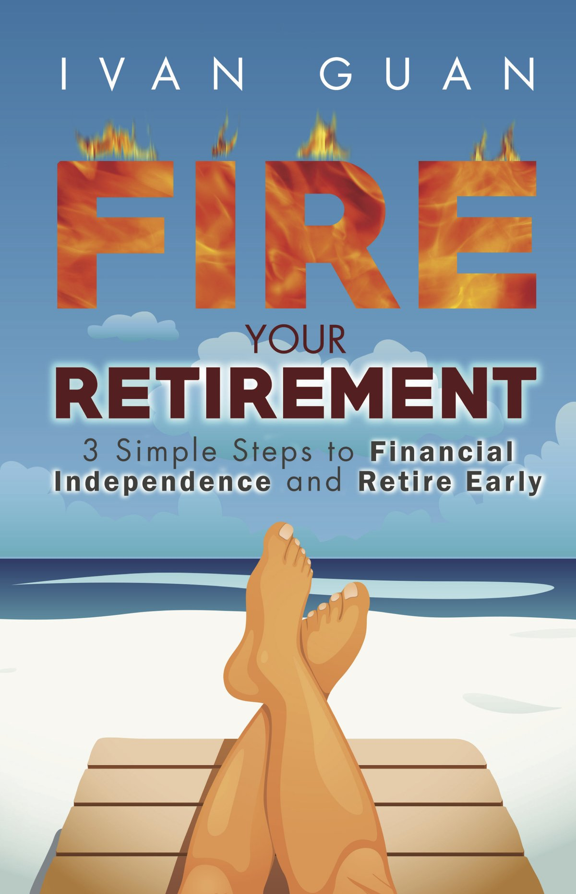

성공한 30대 후반 어느 미국인의 조언
게시: 2019-05-30T06:30:32+09:00
저는 FIRE 운동의 추종자입니다. FIRE라는 것은 Financial Independence Retire Early, 한마디로 젊었을 때 열심히 벌고 모아서 생계에 급급한 삶에서 탈출하자는 이야기입니다. 저는 FIRE를 꿈꾸는 사람들이 자기들끼리 나누는 이야기를 주로 reddit을 통해서 가끔 읽습니다. 최근에 꽤 인상적인 글을 하나 찾아서, 아래에 간단히 주요 내용만 옮겨 보았습니다. https://www.reddit.com/r/financialindependence/comments/bsxrat/am_couple_years_away_from_40_time_for_some/

제목 : 40세까지 2년 남았스. 뒤돌아보며 정리도 좀 하고 조언도 받고 싶네. TLDR (Too Long, Didn't Read의 준말. 너무 길어서 못 읽는 분들을 위해): 내 20~30대를 돌아보며 든 생각. 얻은 교훈과 저지른 실수. 나보다 젊은 친구들에게 도움이 될 수도. 나보다 나이든 양반들에게 조언도 받고 싶어. . 투자를 더 일찍 시작했었더라면. 난 2011년 이후에야 크게 투자하기 시작했어. 큰 실수였지. 저축은행에서 0.05% 이자 받으며 그냥 앉아있던 내 돈을 마지막 1달러까지 모조리 투자를 해야 했었어. 0.05%라는 낮은 이자가 놀랍다고 ? 그땐 온라인 저축계좌가 없었고 CD(예금증서) 같은 거 이해하지도 못했어. . 식생활과 건강. 진짜 중요한거야. 건강을 잃으면 모든 것이 끝장이야. 설탕, 탄수화물, 고기 같은 거에 탐닉하지마. 니 몸에 맞는 균형잡힌 식단을 먹으라구. 잠도 충분히 자. 난 보통 5~6시간 자지만, 요즘은 7시간은 자려고 노력 중이야. 일상적으로 할 수 있는 운동 중에 니가 좋아하는 것을 습관적으로 하라구. . 20~30대엔 스킬 극대화, 그러니까 평생 써먹을 재주 배우는 데에 집중해야 해. 나도 밤늦게까지 진짜 열심히 일하고 공부했어. 일하는 동안에도 내 경력과 스킬에 촛점을 맞춰서 일했어. 정당한 보상은 당장 다음달 월급이 아니라 긴 시간에 걸쳐서 받을 거라고 생각했지. 대신 여행이라든가 사회 생활이라든가 하는 것이 전혀 없었어. 게다가 가족 관계도 나빠졌지. 그래, 이런 그늘 부분은 진짜 심각했고 난 그런 부분을 알면서도 그렇게 했어. 그런데 내 회사 주변에서 보는 신세대 젊은 애들은 그거 진짜진짜 관리 잘 하더라. 걔들은 여행/가족 등 워라밸 균형 맞추는 걸 기가 막히게 잘 해내는데다, 회사측과 연봉협상하는 것도 무자비할 정도로 멋지게 해내더라구. 그래서 이 부분에 있어서는 난 젊은 세대에게 뭐라고 해줄 조언이 없는 것 같아. . 제대로 된 배우자를 고르는데 있어서 서두르지 말고 신중하라구. 이건 따로 설명하지 않아도 될 말 같아. 절대 "이보다 더 좋은 상대는 못 찾을 것 같아" 라는 웃기지도 않는 마음가짐은 갖지 말라구. 배우자를 고르는 것은 절대 '정착한다'라는 느낌이 들어서는 안 돼. 물론 외모는 중요하지 않아. 금전관리, 가족, 친절함, 속궁합(sexual chemistry - 이거 보이는 것과는 꽤 다른 거라구) 등에 있어서 가치관이 같아야 한다는 점이 훠얼씬 더 중요해. . 저점 매수 타이밍을 맞추고 뜰 주식을 고르는 거... 불가능해. 만약 넌 할 줄 안다고 생각하면 말이지, 정식 계약 맺고 내 돈 가져가서 시장 평균치 이상의 수익만 내게 주고 나머지는 다 너 가져도 돼. 못 하겠다고 ? 그럼 닥쳐 (STFU). 내가 말이 좀 심하다고 ? 내 경험이 그래. 난 무지개를 쫓느라고 시간을 너무 많이 허비했어. 난 지금은 그냥 인덱스펀드 같은 거에 투자하고 있어. 여전히 주식질을 하느라고 따로 투자금 계정을 가지고는 있는데, 전체 투자금의 5% 이하로 유지하고 있지. 나도 완벽한 인간은 아니라서, '뭔가 해야 한다'라는 충동을 억누르느라고 애쓰고 있어. . 퇴직연금 수수료 확인해봐. 연 0.15% 이상 수수료를 떼먹히고 있다면 당장 바꿔. 복리로 계산하면 엄청난 손실이야. . 행복/목적/의미. 이건 목표지점이 아니야. 어떤 성과를 이루더라도 니가 너 자신과 니 인생에 대해 느끼는 기본적인 기분은 바뀌지 않아. 넌 공허감과 의미 상실, 그리고 디지털 호스를 통해 쏟아져 들어오는 온갖 나쁜 뉴스로부터 받는 피곤함에 대해 너 스스로 헤치고 나아가 너 자신만의 의미와 행복을 창조해야 해. 이 세상이 개똥같고 불공평하다고 느끼는 건 너 뿐만이 아니야. 이 세상에는 지금도 아무 이유도 없이 온갖 나쁜 일이 계속 일어나고 있다구. 이 우주는 너의 야망과 꿈에 대해서는 쥐뿔도 신경 안써 (doesn't give two leptons about : 역주 : two lepton은 성경에서 어떤 과부가 예수님 앞에서 헌금함에 넣은 동전 두 닢을 말합니다. 당시 가장 작은 동전 단위였습니다. 보통은 예전 영국 화폐 중 가장 작은 동전에 비유해서 doesn't give two pence about...이라는 표현이 있는데 그걸 더 과장한 표현입니다. 이 양반 배운 양반인 듯). 너만 신경쓴다구. 이 우주가 너에게 말이 되든 안되든 상관하지 말고, 너만의 의미와 목적을 만들어야 해. (좋은 출발점은 니가 정말 사랑하는 것에 집중하는 거야.) . 니가 해야할 유일한 '경쟁'은 너 자신과의 경쟁이야. 니가 도착하는 장소는 중요하지 않아. 중요한 것은 너에게 주어진 자원과 기회로 니가 얼마나 멀리 가느냐야. 난 주변 사람들이 "쟤 성공했네"라며 나를 부러워할 때 반대로 패배감에 쩔어지낸 적도 있어. 난 내가 세상에 더 많은 기여를 할 수도 있다는 것을 알기 때문이었어. 사람들은 각자 잠재력의 종류가 다르다고 난 생각해. 니 잠재력이 뭔지는 니가 제일 잘 알겠지. 최소한 인생 몇몇 순간에는 나타날거야. 니 잠재력을 실현하기 위해 노력을 하고, 그로부터 기쁨을 느끼고, 그리고 다른 사람들이 어느 방향으로 여정을 떠나건 잊어버리라구. 심지어 너와 같은 방향으로 가는 사람들이 너보다 앞섰는지 뒤처졌는지도 중요한게 아니야. 니가 저지를 수 있는 최악의 행동은 다른 사람의 인생을 사는 거야. 그렇게 다른 사람들이 정해준 인생을 살면 넌 기쁨도 느끼지 못할 것이고, 니가 니 인생을 살면 어떤 인생이 되었을지도 알 수가 없을테니까 말이야. . 난 14살 이후로 계속 금전적으로 안정된 삶을 추구했어. 근데 그걸 이루고나서 느낀 감정에 대해 정말 깜짝 놀랐어. 처음엔 황홀감도 느꼈고 스트레스가 사라지는 것도 느꼈는데, 그러고나서는 정기적으로 뭔가 안 좋은 느낌이 계속 들더라구. 난 내가 꿈꾸던 비싼 차도 가지고 있고, 멋진 와이프와 대출 안 낀 아름다운 주택과, 경제적 독립, 거기에 안정된 직업 등 모든 걸 다 가졌거든. 근데 느끼는 건 '살아남은 자의 죄책감' 같은 거야. 사정이 좋지 않은 식구나 뭐 그런 사람들 보면 마음이 아파. 가끔은 내가 이런 행운을 누릴 자격이 되나 싶기도 하고. 물론 그런 감정은 일시적인 것이고 난 재빨리 내가 즐기는 것으로 관심을 돌리곤 해. 하지만 그래도 그런 상황이 저 너머에 실존한다는 걸 항상 느껴. 모든 걸 가진다는 것이 행복은 아니더라구. 행복은 발전에서 오는 거더라. 행복해지려면 항상 뭔가를 향해서 발전을 해나가야 하더라구. 너 자신이 의미를 두는 무언가에 대해서 너 자신을 계속 발전시켜야 해. 그게 금전적인 것이든, 사람과의 관계에서든, 지적인 면에서든, 육체적인 것이든 말이야. 우울함에 대해 유일하게 효과가 있는 알약은 발전이야. 난 그걸 너어어무 늦게 깨달은 것 같아. . 글이 너무 기네, 미안해. 주말 아침에 글을 쓰다보니 재미있더라구. 누군가에게 이 글이 도움이 되었으면 해. 내 현황은 이래. 외벌이에, 결혼 했고, 아직 아이는 없지만 1년 안에 하나 낳을 계획이야.